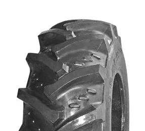
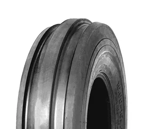
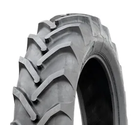
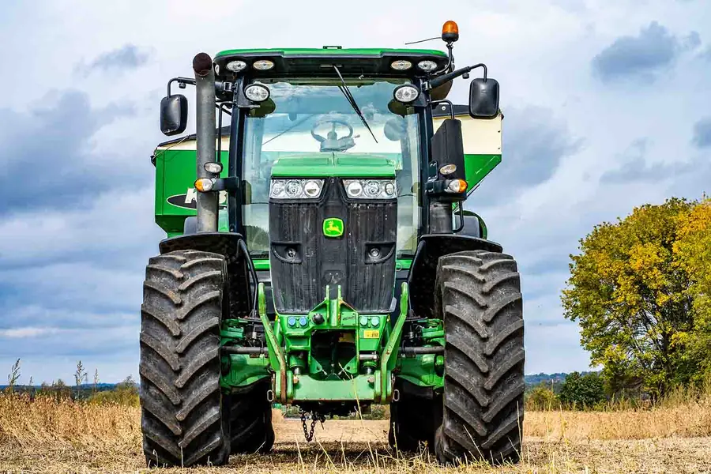

Rear tractor tyres (R-1)
Deep bar lugs that bite into soil and clear mud — for ploughing, discing, planting and haulage.
Rear and front tractor tyres, harvester, implement and trailer tyres — in stock in Harare and Mutare for Massey Ferguson, John Deere, New Holland and more.
Find your tyre
Tap your size to check stock — we’ll fill it into the quote form for you. Don’t see yours? We source most agricultural sizes on request.
13.6 = width in inches · R = radial (a dash “-” means cross-ply) · 28 = rim diameter in inches.
480 = width in mm · 70 = sidewall height as % of width · R = radial · 28 = rim in inches.
What we supply

Deep bar lugs that bite into soil and clear mud — for ploughing, discing, planting and haulage.

Three-rib fronts for 2WD tractors: precise steering, low rolling resistance and long wear.

Bigger footprint, better traction and less soil compaction for high-horsepower and 4WD tractors.
Drive and steer tyres such as 18.4R38 and 11.2R24 — built for the cutting season.
Tyres for trailers, planters, sprayers and balers that carry weight across rough fields.
Tough cross-ply tyres such as 16.9-28 for loaders, backhoes and forestry work.
Before the season starts
Book your tractor and harvester tyres before you need them. Send us your list now and we’ll confirm stock and delivery to your farm.
Get a farm quote
Why farmers choose Proclassic
Fast quote
Send the size off your old tyre (or your tractor model). We check stock at our Harare and Mutare branches and reply on WhatsApp with availability and today’s price.
Questions
Still unsure? Send a photo of your tyre on WhatsApp and we’ll tell you exactly what fits.
Ask on WhatsAppWe stock the common front and rear sizes for Massey Ferguson, John Deere, New Holland and other tractors and harvesters — including 9.5R20, 11.2R24, 12.4-28, 13.6R28, 14.9R28, 16.9-28, 18.4R30, 18.4R38, 18.4R42, 7.50-16 front tyres and metric radials such as 480/70R28 and 710/70R38. Send us your size on WhatsApp to confirm today’s stock.
Radial tyres (an “R” in the size, e.g. 18.4R38) flex more, give a bigger footprint, better traction and less soil compaction, and usually last longer under heavy field work. Cross-ply tyres (a dash, e.g. 18.4-38) have stiffer sidewalls, resist cuts well and cost less, which suits loaders, backhoes and lighter or mixed duty. Tell us how you use the tractor and we’ll recommend the right one.
On a size like 13.6R28, 13.6 is the tyre width in inches, R means radial and 28 is the rim diameter in inches (13.6-28 with a dash is cross-ply). Metric sizes like 480/70R28 give the width in millimetres (480), the sidewall height as a percentage of the width (70) and the rim size in inches (28). The size is moulded on the tyre sidewall.
Yes. We deliver nationwide across Zimbabwe from our Harare and Mutare branches, so farms and estates outside the cities can order without travelling. Tell us your location when you request a quote.
Yes. We supply bulk orders for farms, estates, contractors and dealers, with consistent availability and delivery support. Choose “10+ (fleet / bulk)” on the quote form and we’ll put together the full list.
Tyre prices move with stock and supply, so we confirm the exact price when you ask. Send your size on WhatsApp and we reply with availability and today’s price — usually within minutes during business hours.